여행자 가이드
이 문서는 포트폴리오 공개를 위해 재구성·수정된 것으로, 실제 서비스에 적용된 원본과 다를 수 있습니다.
UX: 플로우
개발 방향 컨셉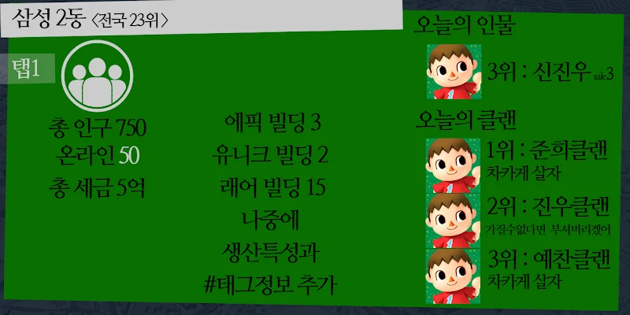
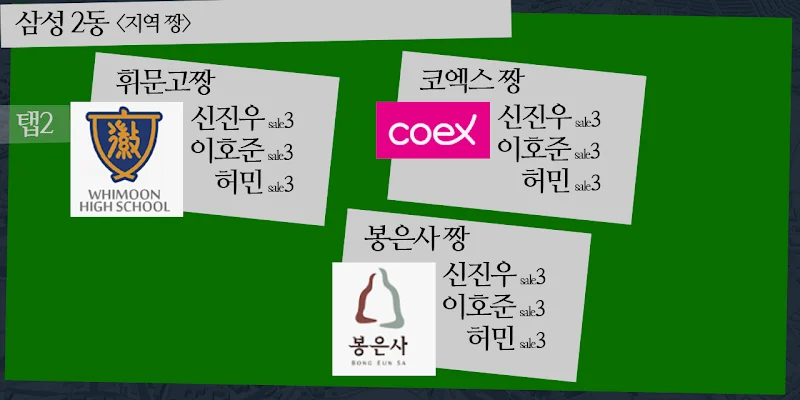
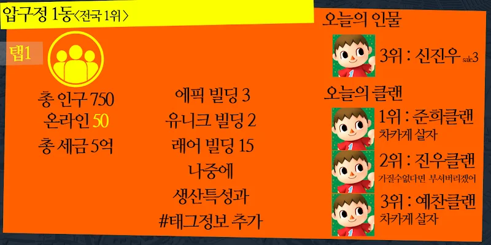
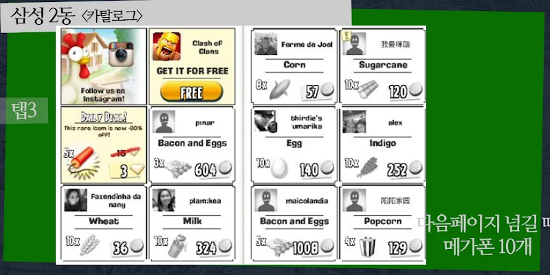




기본 UI 사용법
좌하단 주소버튼을 눌러서 띄운다. 월드맵 스크롤 하다가 새로운 그리드에 들어가면 해당 버튼이 깜박깜박 해서 터치 유도한다.
그리드 고유 컬러 2색 조합 사용. 일단 컬러 조합은 랜덤으로. 색 차이는 어느정도 나게
탭 정보
탭1 : 그리드 통계 : 건맨 인구, 온라인 유저 수, 그동안 쌓인 세금, 주요 클랜과 인물.
탭2 : 지역짱 (B3에서는 제외 - 지역짱데이터를 가져올 빌딩정보를 선정하는 작업이 우선 ’아르바이트 툴’)
탭3: 가판대 카탈로그: 그 그리드 유저들의 가판대 모음 -> 다음 페이지 넘길때 메가폰 소모. 헤이데이 가판대.
- 이 N페이지를 넘겨 보는 동안 공짜.
- 목록을 다시 받아오는 데 까지 일정 시간이 필요함. 예) 10분.
- 그걸 땡기는데 메가폰이 드는 것입니다.
- 다시 받아올 때 기존 목록을 포함하지 않으면 더 좋을거같긴 한데 어려우면 또 완전 랜덤이어도 괜찮을듯.
- 카탈로그 가이드
- 완전 랜덤으로 가져와서 N 페이지를 구성한다.
- 한페이지에 8~10개의 상품이 보여진다.
작업 우선순위
- 포토맵 : 0 순위
- 정보 : A
- 카탈로그 : B
- 지역짱 : C
포토맵
월드맵을 드래그할 때(지역을 이동할 때), UI표시를 제거하고 주변의 빌딩사진들을 유저에게 보여주어 주변의 분위기를 보여준다.
- 월드맵 줌 1단계에서만 보여준다.
- 중심 빌딩의 사진은 보여주지않는다.
- 사진보여져야하는 위치가 측면에 고정으로 있을 필요는 없다.
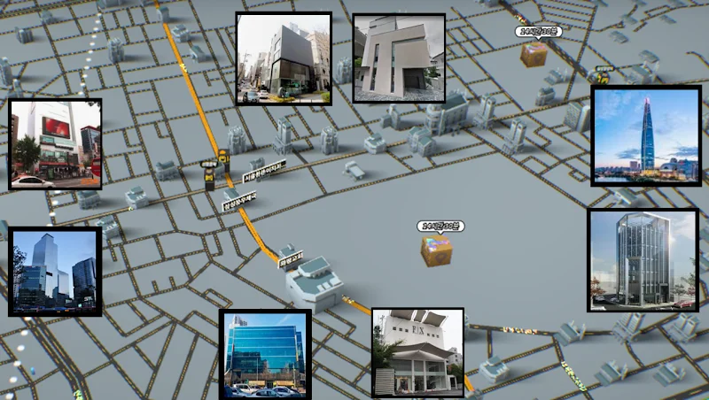
개요
처음 방문하는 지역정보를 유저에게 제공한다.
월드맵을 탐색하는 유저에게 정보를 제공
(가안)
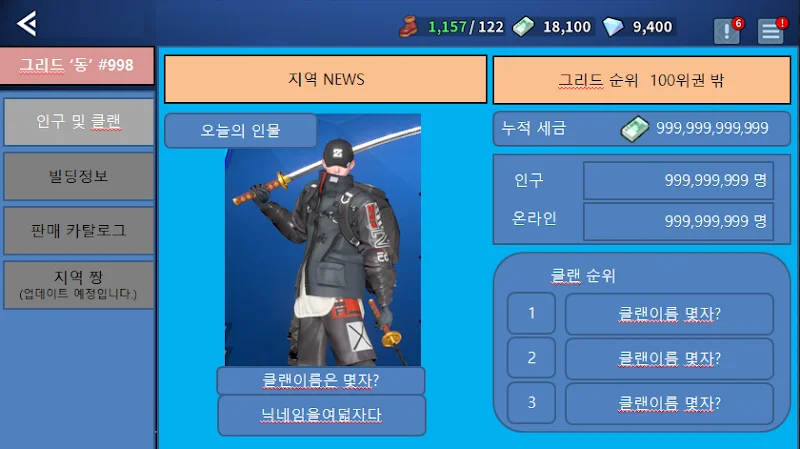

유저가 볼 수 있는 정보
포토맵 (월드맵을 드래그했을 때 표시)
월드맵을 드래그하면서 주변의 빌딩사진을 볼 수 있다.
오프라인 분위기 파악.
주소를 터치했을 때 제공하는 정보
그리드 고유 컬러
그리드 정보
- 그리드 순위
- 인구 수 : 그리드내에 본진이 있는 유저 수
- 그리드 인구 중:
현재 접속 인원수 (해당 그리드에 본진을 둔 유저중 현재 접속인원 수)- 페이지를 오픈했을 때, 그리드에서 접속한 인원 수.
지난 세금→ 현재세금 ( 세금취합주기에 따름)- 랜드마크 빌딩
- 에픽빌딩 수량
- 유니크 빌딩 수량
- 레어빌딩수량은 보여주지않음
오늘의 인물
- 본진을 둔 유저들 중 랜덤 1명
- 추후 아바타를 가진 유저가 우선순위
그리드내 본진이 있는 유저들의 순위 10~1위 랜덤 1명 (유저인터렉션 있음)
클랜정보
- 그리드를 기점으로 하고있는 클랜들 중 Top 3
그리드에서 판매되고 있는 상품 (가판대)
- 상품 구매가능
추후 추가될 수 있는 정보
그리드 태그 정보
- 그리드에만 붙을 수 있는 특성 또는 특징
그리드 특정건물의 지역짱
- 그리드 내 특정건물을 보유하고 있는 유저순위 (전투력?)
[정보표시 방법]
1️⃣빌딩사진 보여주기 ( 포토맵 )
사진크기
- 대 : 256x256
- 중 : 128x128
- 소 : 64x64
사진 탐색 범위
- 유저가 보고있는 화면 중심으로 일정범위의 빌딩의 사진 데이터를 가져온다.
- 각 범위의 빌딩 사진중 랜덤으로 사진을 보여준다.
- 화면을 드래그하여 주변 분위기 확인
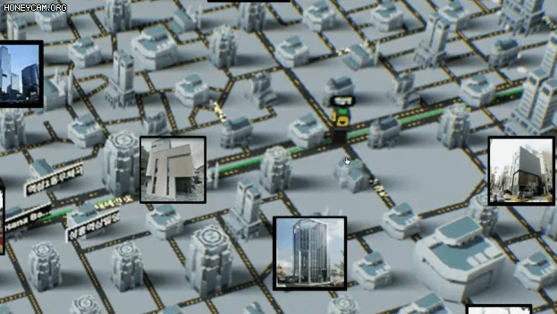
- 말풍선 처럼 빌딩위에 사진이 붙어 있다.
- 드래그가 진행 중 일 때, 다른 UI를 표시하지않고 사진만 보여준다.
- 드래그가 종료되면 빌딩사진을 보여주지않는다.
- 드래그 중에는 사진 이외의 UI는 표시하지않는다.
- 드래그 중 표시되는 UI
- 행정구역 주소
- 토스트 메시지
- 레이드 메시지 (드래그 종료. ‘HUD표시’상태로 돌아감.)
- 월드맵에 표시되는 UI (사진이 최상위 )
- 빌딩특성 (특성보다 사진이 상위 뎁스: 사진이 특성을 가림)
- 공격중 / 빼앗김
- 생산품
- 시설
- 수성보상
- 도장찍기
- 드래그 중 표시하지않는 UI (HUD)
- 프로필 사진 및 닉네임, 종합전투력
- 탑바 및 메뉴버튼
- 에픽미션 버튼
- 미션버튼
- 채팅버튼과 내용
- 레이더버튼
- 유저리스트 버튼
- 월드맵 줌인 초기화버튼
- 월드맵 보기 옵션버튼
- 드래그 중 표시되는 UI
- 사진을 보여줄 빌딩 선정방법
- 제시방법
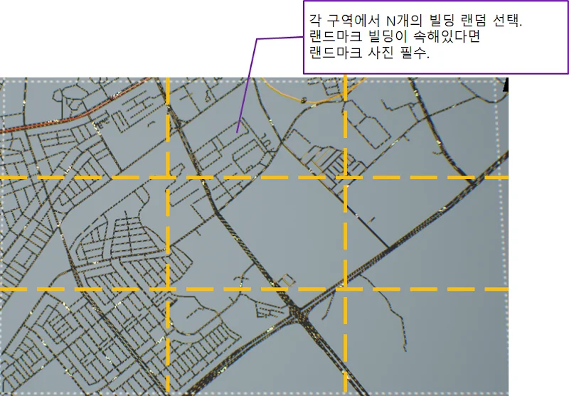
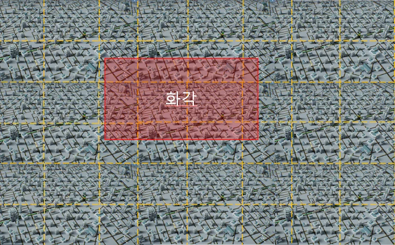
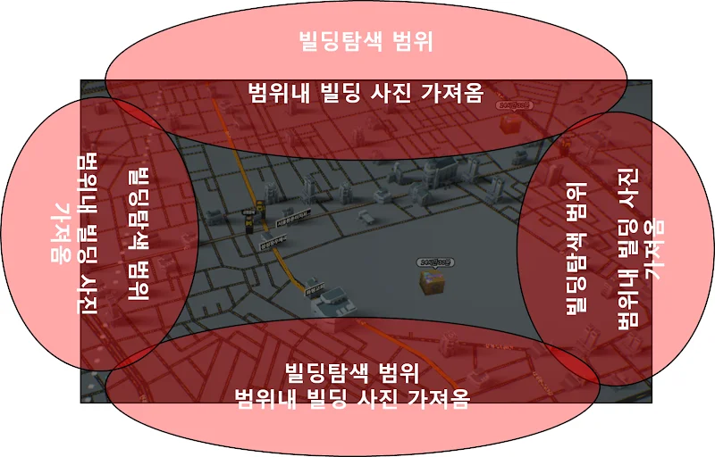
- 그리드를 9개의 구역으로 나눈다.
- 화각에 포함되는 구역에서 N개 (4종 예상)의 빌딩을 랜덤으로 선택하여 사진을 보여준다.
- 구역에 랜드마크가 속해있다면, 랜드마크 사진은 우선순위 0 순위.
- 줌 1단계에서 최대 9개의 구역이 화각에 들어올 수 있음.
- 제시방법
- 사진로딩
- Best 상황 : 드래그 상황에 맞게 실시간으로 보여진다면 Best
- 실시간으로 사진 갱신이 어렵다면 (개발팀 문의) : 사진 로딩에 시간이 오래 걸린다면 드래그 중에 인디케이터로 이미지 로딩중을 보여주고 드래그가 종료(터치는 유지)되면 이동이 없을 시점을 기준으로 이미지를 불러온다.
- 이미지는 가운데 정렬
사진이 표시되어야 할 위치가 고정은 아니지만고정이 필요하다면아래와 같이 정의함.고정은 안하는 방향으로 진행.화면에서 보는 위치에서 이미지가 표시되는 빌딩 방향으로 이미지위치가 자율적으로 변동월드맵에서 화면 밖의 내 위치표시가 표시되는 것 처럼.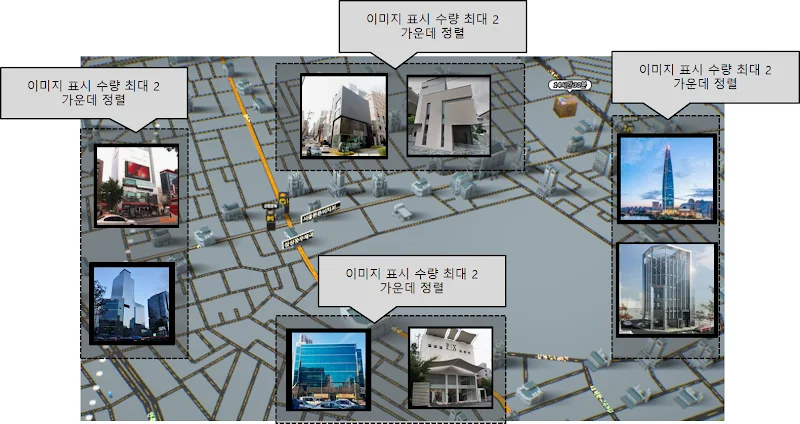
내가 위치한 그리드가 아닐 경우 그리드 주소에 반짝 반짝 깜빡깜빡
- 연출예시
- 이런 효과가 아니더라도 눈에 띄는 효과 필요.
- 표시가 되어야하는 부분
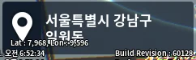
- 연출이 필요한 시점
- 현재 내 위치와 다른 그리드일 경우 연출을 넣어준다.
- 고정된 데이터가 아닌 변동된 데이터이므로 ‘첫 방문 그리드’만 표시하지 않고, 나와 다른 그리드일 경우 유저에게 터치를 어필한다.
2️⃣탭 1 표시 유저 및 클랜 정보 (디렉션의 탭 1내용을 탭 2개로 분리)
표시정보
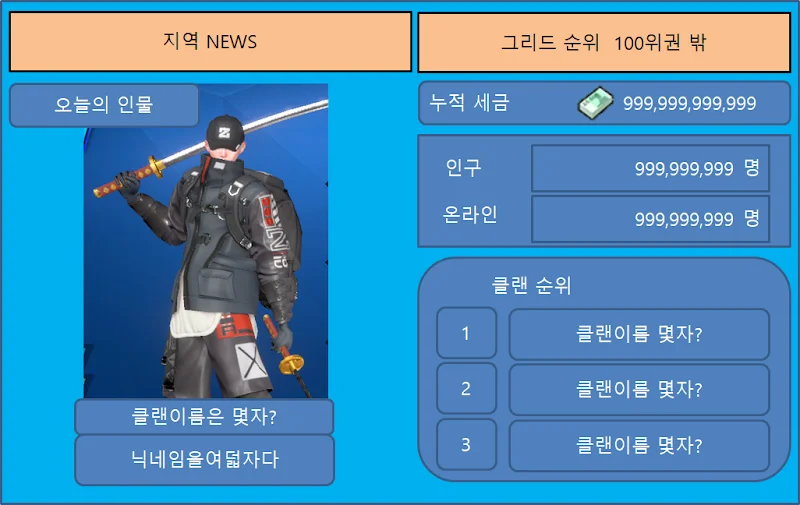
지역정보
- 그리드 순위
- ‘그리드에 본진이 있는 유저의 전투력 총합’으로 순위결정
- 집계되지 않는 랭킹의 경우( 바다, 섬 등) 순위를 표시하지않음
- ‘N 위 ‘로 표시 (최하위)
100위 밖의 그리드 순위는 집계 하지 않는다.각 그리드 순위 집계 필요. (서버팀 작업)100위 까지만 표시.그 밖의 순위는‘100위권 밖’이라고만 표시.집계시간: 유저랭킹과 동일 (1시간 서버시간 기준 - 정각-)
- 인구정보
- 인구 : 그리드에 본진을 둔 유저의 수
- 온라인 :
- '여기 몇명이나 온 상태인가' 를 보여주는게 의도.
- 현재 방문중인 유저 수
해당그리드에 본진을 둔 유저들 중 온라인 상태인 유저 수
- 오늘의 인물
- 본진을 둔 유저들 중 랜덤 1명
(온라인 상태)- 캐릭터: 전투력이 제일 높은 캐릭터.
- 추후 아바타를 가진 유저가 우선순위
- 오늘의 유저가 표시되지않는 경우 있음
- 캐릭터가 표시되는 영역에 ‘유저없음’ 표시 필요.
- 해당 유저가 본진이 없을 경우, 유저를 터치하여 가판대로 이동하려 할 때 토스트 메시지를 보여준다.
- 토스트메시지 노출 필요:
- uid: homeless_user
- 본진 정보가 없는 유저입니다.
- 토스트메시지 노출 필요:
표시되는 유저: 그리드내 본진이 있는 유저들의 순위 10~1위 랜덤 1명 (유저인터렉션 있음)해당유저가 최근 사용한 캐릭터 (아바타 입은 주캐)나중에 아바타 팔면 그걸 계속 노출시켜줘야 함. (지금 캐릭터UI에서 표시되는 사이즈와 비슷하게)
- 본진을 둔 유저들 중 랜덤 1명
- 그리드내 있는 클랜정보
- 그리드내 클랜 순위 Top 3
- 집계시간: 유저랭킹과 동일
(1시간 서버시간 기준 - 정각-)- 그리드별 집계시간 다를 수 있음. (서버 과부하 고려)
- 세금이 걷힌 총액
- ‘조’ 단위가 넘을 수 있음
지난 세금-->현재세금 ( 세금취합주기에 따름)실시간 아님. 정보를 보관하고있지않다면, 이번 누적세금- 세금이 표시되는 다른 컨텐츠
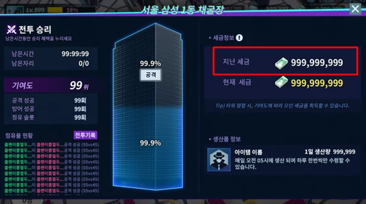
- 세금 데이터가 없을 때
- 0원 으로 표시.
2️⃣탭 2 빌딩 정보
표시될 정보
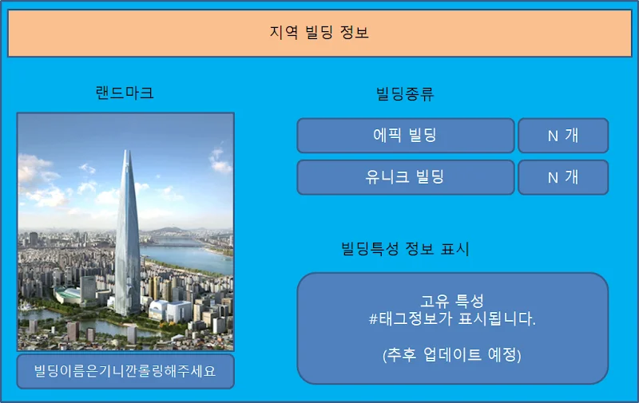
- 해당 그리드의 랜드마크
- 빌딩사진
- 빌딩이름
- 해당 그리드의 빌딩 종류
- 해당 그리드를 주소로 가지는 에픽 빌딩 수량
- 해당 그리드를 주소로 가지는 유니크 빌딩 수량
- 빌딩특성 정보 (추후예정 - b3 이후)
- 해당그리드에서 부여되는 고유 특성 안내
- 랜드마크가 없거나 확인 할 수 없는 지역은 표시 안함.
3️⃣탭 3 카탈로그
카탈로그
- 카탈로그 갱신은 ‘메가폰’
- 10분마다 100개 리스트를 취합하고, 100개중 랜덤 표시. (시간은 스크립트로 컨트롤)
- 갱신때 품절인 사항은 포함하지않음.
- 가안 (상품수량 8개 x 3페이지)
카탈로그 갱신 재화
- 메가폰
- ri_consumable / megaphone
- common_constant.json / grid_catalog_reset_cost
- 비용: 메가폰 10개
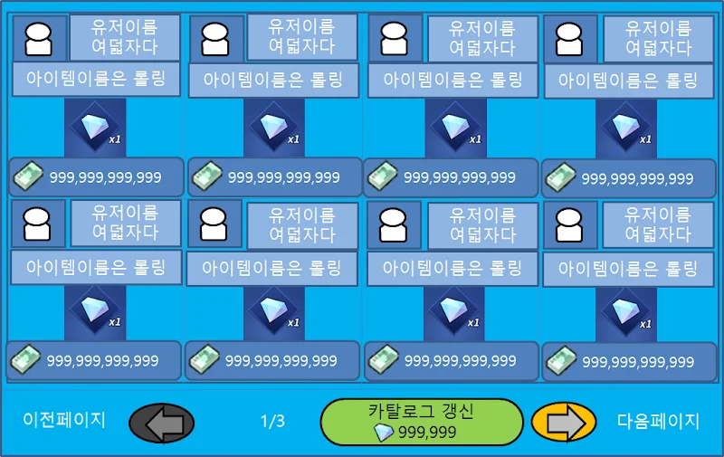
카탈로그 순서
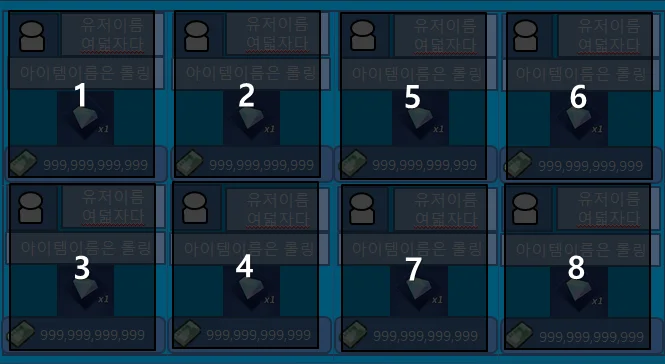
재화가 부족할 때 카탈로그 갱신을 눌렀을 경우
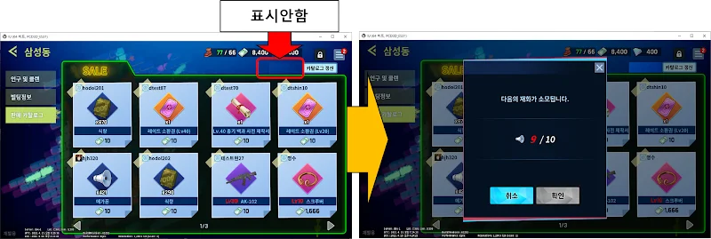
- 재화 소모팝업에서 확인버튼 비활성화
- 시안에서 메가폰비용이 표시되던 사항은 제거.
플로우
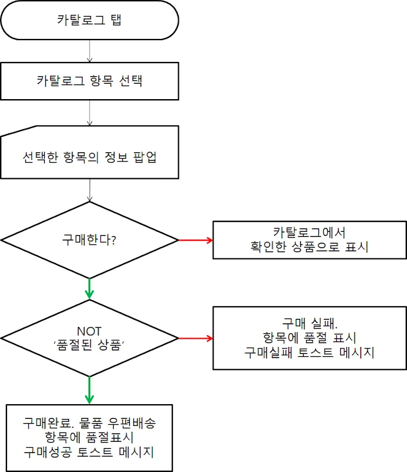
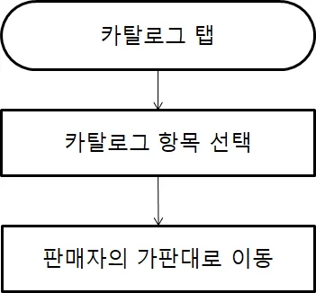
- ▣필요한 토스트 메시지
- uid : first_catalog_page
- text : 첫 페이지 입니다.
- 토스트 메시지가 보여지는 경우
- 카탈로그 첫 페이지에서 [이전] 페이지를 누르려 할 때
- 토스트 메시지가 보여지는 경우
- text : 첫 페이지 입니다.
- uid : last_catalog_page
- text : 마지막 페이지 입니다.
- 토스트 메시지가 보여지는 경우
- 카탈로그 마지막 페이지에서 [다음] 페이지를 누르려 할 때
- 토스트 메시지가 보여지는 경우
- text : 마지막 페이지 입니다.
- uid : reset_catalog
- text : 카탈로그가 갱신되었습니다.
- 토스트 메시지가 보여지는 경우
- 카탈로그 갱신에 성공했을 때
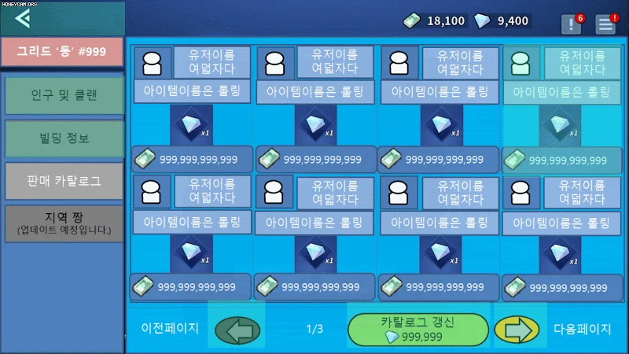
- 토스트 메시지가 보여지는 경우
- text : 카탈로그가 갱신되었습니다.
- uid : reset_catalog_free
- text : 카탈로그가 오래되어 무료 갱신되었습니다.
- 토스트 메시지가 보여지는 경우
- 오픈한지 10분이 지난 카탈로그를 갱신 성공했을 때
- 토스트 메시지가 보여지는 경우
- text : 카탈로그가 오래되어 무료 갱신되었습니다.
- uid : first_catalog_page
- 카탈로그 선정방식 (서버팀에게 문의 필요)
- 카탈로그가 생성될 시점을 기준으로 해당 그리드의 가판대 물품리스트를 취합하여, 랜덤으로 보여준다.
- 카탈로그는 N시간 유지된다. (매번 볼때마다 바뀌지는 않는다.)
24시간으로 설정 예정.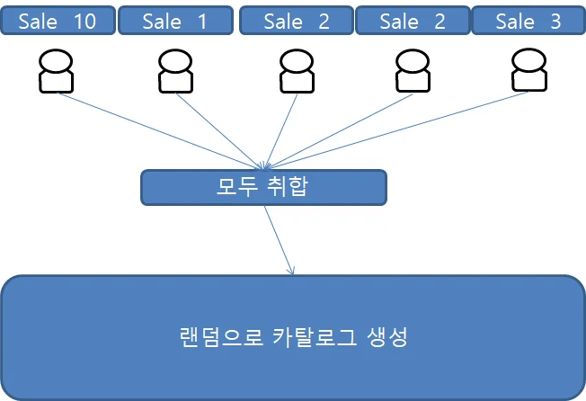
- 카탈로그는 메가폰를 사용하여 갱신가능.
- 페이지는 최대 N페이지 (1~2페이지)
- 페이지가 많을 경우, 첫페이지로 이동과 같은 기능을 지원해야하므로 페이지는 최대 2~3페이지.
- 판매하는 유저가 없을 경우 카탈로그에 보여지는 것이 없을 수 있음.
- 판매유저가 없을 경우, 카탈로그 독점 현상(유저 한명의 판매품목만 보여지는 현상)이 발생 할 수 있음.
- 각 유저마다 보여지는 카탈로그는 다르다.
- 상품 표시 정보
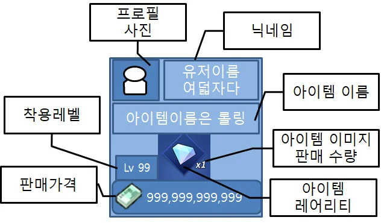
- 판매상품에 표시될 사항
- 프로필사진
- 판매자의 프로필 사진
- 닉네임
- 판매자 닉네임
- 아이템이름
- 아이템 이름은 롤링 기능을 지원필요.
- 아이템 이미지
- 해당아이템이 장비일 경우 착용레벨
- 판매수량
- 천단위까지 입력가능 (다이아 판매가능하다는 기준)
- 다이아는 판매수량을 제한해야함.
- 판매가격
- 1억단위까지 표기 가능 ( 현재 억단위까지 가격입력가능)
- 프로필사진
판매 완료된 상품에 표기될 사항품절표시구매한 유저의 프로필 사진구매한 유저의 닉네임 (선택사항)
- 상태에 따른 표기 방법
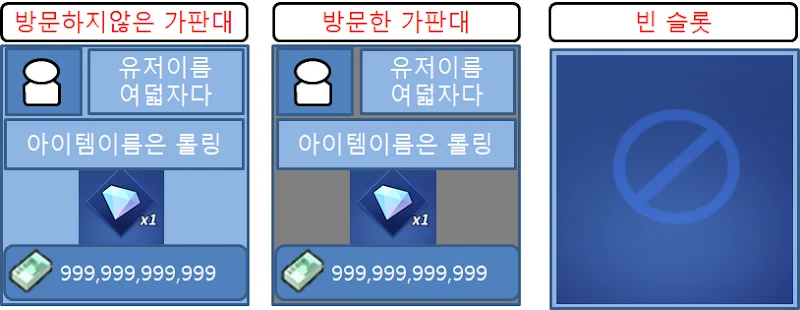
- 레퍼런스 (‘헤이데이’)
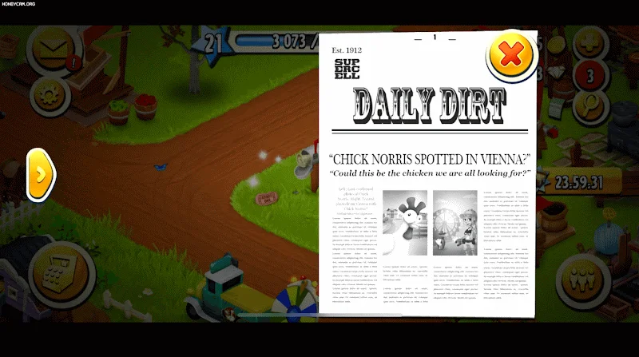
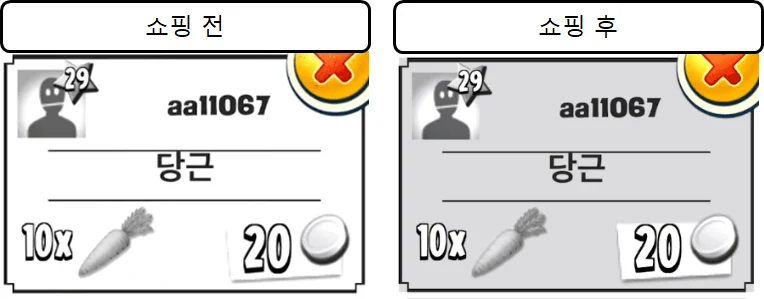
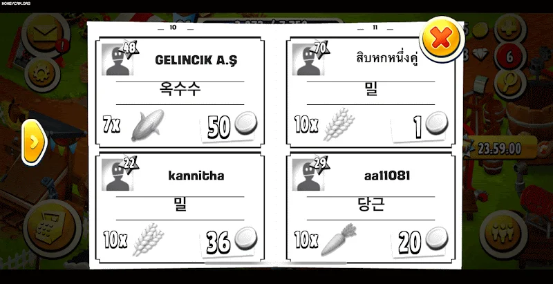
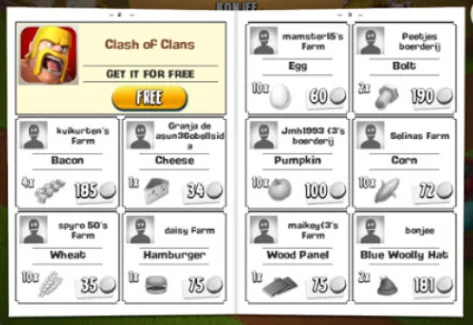
🟨탭 4 지역짱 (짱건물 이후 진행)
전국 짱건물을 선정하고 난 이후 진행
[그리드 고유 컬러]
컨셉
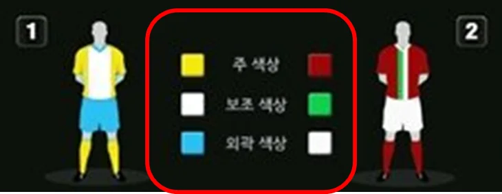

각 그리드마다 고유의 색 조합을 부여하여, ‘색’으로 그리드를 구분할 수 있도록 한다.
그리드 컬러 규칙
그리드 고유 컬러 설정 규칙
- 색 선별 방법 (HSV 방식 HSV->RGB코드변경 참조사이트 ) 색상변경사이트
- 2색 조합
- 10만개 컬러 설정 시 317개 컬러 필요
- H 17단계 (+20씩 증가 0~350, 0==360 )
- S 7단계
(+25씩 증가 75~100)--> (+10씩증가 40~100&) - B 6단계 (+10씩 증가 50~100)
- 350개 (350 * 349 = 122,150개 조합 사용가능)
배치방법
색상 규칙
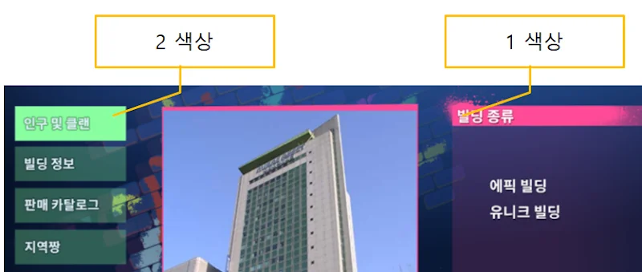

스크립트 (gps_grid_color.json)
hue 값
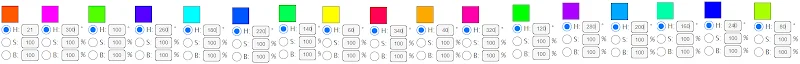
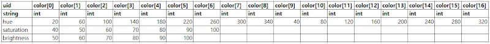
1색 설정 (우측)
그리드를 가로로 연속해서 전국 그리드에 색을 배치한다.
그리드를 줄바꿈해서 색을 배치할 때, 이전 행(가로)의 시작보다 한 단계 다음 단계부터 배치를 시작한다.- 그리드 줄바꿈시 배치 시작의 번호 순서
- 0, 5, 10 (1행부터 3행)
- 1, 6, 11 (4행부터 6행)
- 2, 7, 12 (7행부터 9행)
- 3, 8, 13 (10행부터 12행)
- 4, 9, 14 (12행부터 15행)
- 5, 10,15 (16행부터 18행)
- 6, 11,16 (19행부터 21행)
saturation(채도) 값 랜덤
brightness(명도)값 랜덤
예시)
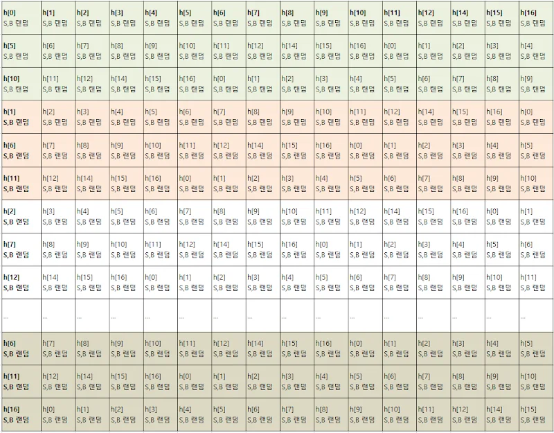
제 2색 배치 (탭 버튼색)
스크립트 값 중 랜덤.
- Hue 값 -> Saturation 값 -> Brightness 값 -> 최종색
동일한 경우 발생할 수 있음.
UI 가안
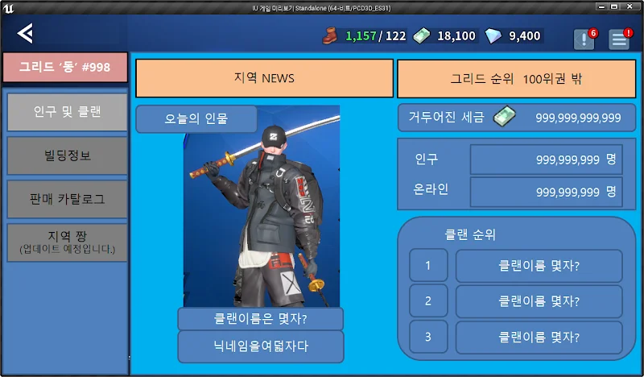
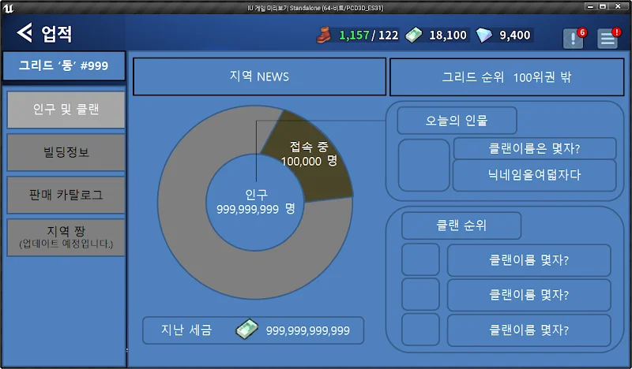


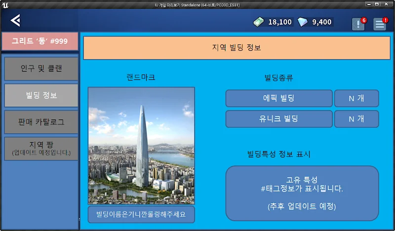

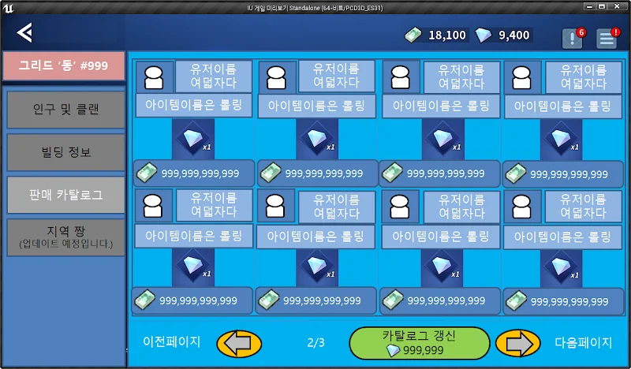

개발
예비작업
- leader_character_uuid 추가됨
- 모든 패킷의 bypass_param -> log_info -> leader_character_uuid 를 세팅해 주세요
- pbuf_character_buy_character 패킷에 total_character_count 추가됨
- 보유하고 있는 캐릭터의 개수를 세팅해주세요
포토맵
- 기존의 정보로 작업가능
- 빌딩 이미지가 없을 경우 gps_building_tag의 alternate_photo를 대신 사용한다.
- 나중에 이미지를 3가지로 분리할 경우 수정작업이 필요합니다.
유저 및 클랜 정보
- pbuf_community_grid_news
빌딩정보
- 기존의 정보로 표시가능
카탈로그
- pbuf_community_grid_catalog
- 최초 무료 카테고리를 요청한다
- pbuf_community_grid_catalog_reset
- 메가폰을 소모해서 카테고리를 갱신한다